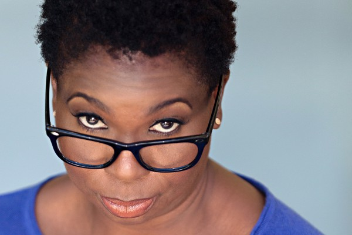

#3193 Dinner for One - Eine mörderische Party
Alternativ: The Perfect Host


 IMDB-Wertung: 6.8 / 10
IMDB-Wertung: 6.8 / 10  Metascore: 48
Metascore: 48 
John Taylor hatte alles bis ins Detail geplant: Der Banküberfall sollte ohne Komplikationen ablaufen. Dennoch kam alles anders. Verletzt und von der Polizei gesucht befindet er sich auf der Flucht. Auf der Suche nach einem Ort zum Untertauchen verschafft sich John unter falschem Vorwand Zutritt ins Haus des unscheinbaren Warwick Wilsons. Dieser bereitet sich seinerseits gerade auf eine Dinner Party vor, die er an diesem Abend geben möchte. Als John beschließt Warwick als Geisel zu nehmen, kommt abermals alles anders als geplant. Warwick ist nämlich nicht dazu bereit, seine Dinner Party ausfallen zu lassen und John soll sein ganz "spezieller" Gast sein.
Jahr: 2010
Dauer: 88 Minuten
FSK: 16
Land: USA Studio: Magnet ReleasingTonspuren: DTS - ,
Untertitel:
Auflösung: 1080p (1920x1080) Größe: 5509 MB
Genre: Thriller, Komödie, Krimi
Regisseur: Nick Tomnay
Drehbuch: Nick Tomnay, Krishna Jones
Soundtrack: John Swihart
Darsteller:
 David Hyde Pierce als Warwick Wilson
David Hyde Pierce als Warwick Wilson Clayne Crawford als John Taylor
Clayne Crawford als John Taylor- Tyrees Allen als Roman
- Cooper Barnes als Rupert
- Megahn Perry als Simone De Marchi
- Helen Reddy als Cathy Knight
- Indira G. Wilson als Monica
 George Cheung als Storekeeper
George Cheung als Storekeeper- Brooke Anderson als Thief
-  Cheryl Francis Harrington als Car Rental Worker
- Amanda Payton als Girl at Party
- Joseph Will als Det. Valdez
 Nathaniel Parker als Det. Morton
Nathaniel Parker als Det. Morton Greg Brown als Man in Polaroid
Greg Brown als Man in Polaroid- Mike Foy als Punk on Car
- Cal Rein als Party Guest
- Daisy Tormé als Female Radio Broadcaster
- Ivan Allen als Male Radio Broadcaster
- Rayford Sewell als Guard , uncredited
 Joanna Theobalds als Party Guest , uncredited
Joanna Theobalds als Party Guest , uncredited- Annie Campbell als Chelsea
- Tracy Britton als TV Newscaster
- Daisy Castro als Party Guest
- Lynda Valliche als Party Guest
- Hayden Victor als Party Guest
- Hannah Cosgrove als Party Guest
- Bret Victor als Party Guest
- Adam Absinthe als Party Guest
- James McAuley als Party Guest
- Scott Manson als Party Guest
- Allan Yates als Party Guest
- Tim Wagg als Party Guest
- Jason Tokoro als Party Guest
- Jessie Lewis als Party Guest
- Nurse Wagg als Party Guest
- Maple Navarro als Party Guest
- Jamila Jackson als Party Guest
- Timothy Edmond als Party Guest
- Eden Heigel als Party Guest
- Dishanya Weerasinha als Party Guest
- Monya De als Party Guest , uncredited
Datei: X:\2010(A-F)\Dinner for One - Eine mörderische Party (2010, FSK16, 1920x1080).mkv seit 11.02.2016
Festplatte: HD 2009(G-Z)-2010(A-F)
 Es gibt insgesamt 95 Filme in der Gruppe '2010(A-F)'
Es gibt insgesamt 95 Filme in der Gruppe '2010(A-F)'